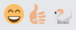
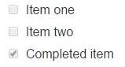

Formater le texte #
Markdown simplifie le formatage des messages. Saisissez un message comme vous le feriez normalement, et utilisez les règles suivantes pour l’afficher avec un formatage spécial.
Styles de texte #
Vous pouvez utiliser _ ou * autour d’un mot pour le mettre en italique. Mettez-en deux pour le mettre en gras.
_italique_s’affiche ainsi : italique**gras**s’affiche ainsi : gras**_gras-italique_**s’affiche ainsi : gras-italique~~barré~~s’affiche ainsi :barré
Blocs de code #
Créez un bloc de code en indentant chaque ligne avec quatre espaces, ou en mettant trois accents graves sur la ligne au dessus et en dessous de votre code. Exemple :
```bloc de code```
s’affiche ainsi :
bloc de code
Coloration syntaxique #
Pour ajouter de la coloration syntaxique, saisissez le langage utilisé après les ``` au début de votre bloc de code.
Les langages pris en charge sont :
diff, apache, makefile, http, json, markdown, javascript, css, nginx, objectivec, python, xml, perl, bash, php, coffeescript, cs (C#), cpp (C++), sql, go, ruby, java, ini, latex
Exemple :
``` go
package main
import "fmt"
func main() {
fmt.Println("Hello, 世緌")
}
```
S’affiche ainsi :
package main
import "fmt"
func main() {
fmt.Println("Hello, 世緌")
}
Code sur la même ligne #
Partagez du code (police à chasse fixe) à l’intérieur d’une ligne en l’entourant d’accents graves.
`monospace`
S’affiche ainsi : monospace
Liens #
Créez un lien avec titre en mettant le texte désiré entre crochets et le lien associé entre parenthèses.
[Découvrez Mattermost !](https://about.mattermost.com/)
S’affiche ainsi: Découvrez Mattermost !
Images sur la même ligne #
Créez une image sur la même ligne avec un ! suivi par le texte alternatif entre crochets et le lien entre parenthèses. Ajoutez du texte entre guillemets anglais (") pour le faire apparaître lors du survol de l’image avec la souris.

et
[](https://travis-ci.org/mattermost/platform) [](https://github.com/mattermost/platform)
S’affiche ainsi :
et


Émojis #
Les émojis sont fournis gratuitement et librement par Emoji One. Consultez la liste complète des émojis ici.
:smile: :+1: :sheep:
S’affiche ainsi :

Lignes #
Créez une ligne avec trois *, _, ou -.
*** s’affichera ainsi :
Blocs de citation #
Créez un bloc de citation avec >.
> bloc de citation s’affiche ainsi :
bloc de citation
Listes #
Créez une liste avec * ou - en tant que puces. Indentez une puce en ajoutant deux espaces devant.
* élément de liste un
* élément de liste deux
* sous-élément de liste deux
S’affiche ainsi :
- élément de liste un
- élément de liste deux
- sous-élément de liste deux
Utilisez des nombres pour en faire une liste numérotée :
1. Élément un
2. Élément deux
S’affiche ainsi :
- Élément un
- Élément deux
Créez une liste de tâches en utilisant des crochets :
- [ ] Élément un
- [ ] Élément deux
- [x] Élément terminé
S’affiche ainsi :

-[ ] Élément un -[ ] Élément deux -[x] Élément terminé
Tableaux #
Créez un tableau en plaçant une ligne de tirets sous la ligne d’entête et en séparant les colonnes par une barre verticale | (il n’y a pas besoin d’aligner exactement les colonnes pour que cela fonctionne). Précisez comment aligner les colonnes du tableau en ajoutant des deux-points : dans la ligne d’entête.
| Aligné à gauche | Centré | Aligné à droite |
| :--------------- |:---------------:| -----:|
| Colonne gauche 1 | ce texte | $100 |
| Colonne gauche 2 | est | $10 |
| Colonne gauche 3 | centré | $1 |
S’affiche ainsi :
| Aligné à gauche | Centré | Aligné à droite |
|---|---|---|
| Colonne gauche 1 | ce texte | $100 |
| Colonne gauche 2 | est | $10 |
| Colonne gauche 3 | centré | $1 |
Titres #
Créez un titre en tapant # puis un espace avant votre titre. Pour des titres plus petits, utilisez plus de #.
## Grand titre
### Titre plus petit
#### Titre encore plus petit
S’affiche ainsi :
Grand titre #
Titre plus petit #
Titre encore plus petit #
Vous pouvez également souligner le texte en utilisant === ou --- pour créer des titres.
Grand titre
-------------
S’affiche ainsi :